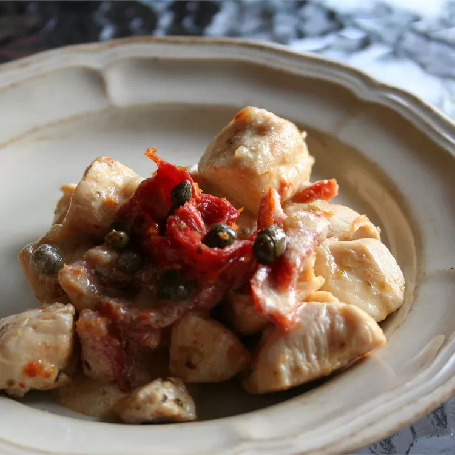

Pollo Mediterranean
Pollo picante y lleno de sabor en una rica salsa de crema. Genial con pasta farfalle (pajarita) (aunque me gusta servirla con el improbable compañero de un abundante arroz integral porque soy un fanático del arroz).
Killer Artichokes (de este sitio) y una copa de chardonnay son excelentes compañeros.

Ingredientes
- 2 cucharadas de aceite de oliva
- 12 tiras de pollo, cortadas en tiras
- 3 dientes de ajos picados
- Aceitunas verdes
- Una taza de leche
instrucciones
- Calienta el aceite de oliva en una sartén a fuego medio-alto. Coloque el pollo y el ajo en la sartén. Sazone con 1/2 cucharadita de sal, pimienta y condimento italiano. Agrega los tomates, las aceitunas, el vino y el perejil. Reduzca el fuego a bajo y continúe cocinando hasta que el pollo ya no esté rosado en el centro. Retire el pollo y colóquelo en un plato, dejando la salsa en la sartén. Agrega la crema agria, la leche y 1/2 cucharadita de sal a la salsa restante.
- Batir la maicena y el agua en un tazón pequeño. Aumente el fuego a medio y agregue la mezcla de maicena. Continúe revolviendo hasta que la salsa se espese. Sirve la salsa con el pollo.